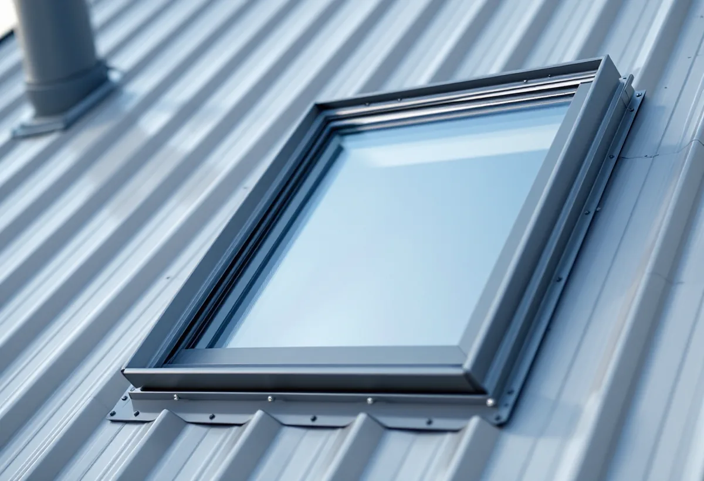
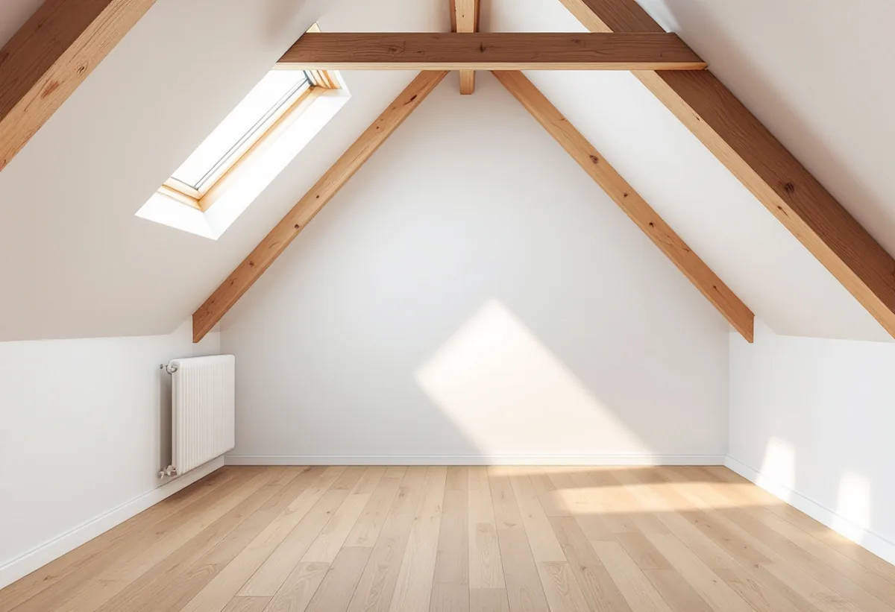

Platsbesök
Gratis besök på vinden och taket.
När en vind i Vasastan ska bli bostad blir takfönstren i regel en del av projektet, och varje takfönster är ett nytt hål i plåten. Geal Entreprenad AB har egna plåtslagare som tar upp och kläder in takfönster, lägger om plåt runt dem och tar fram detaljerna som föreningen behöver till bygglovet.
Stockholms stad skriver att man ofta behöver bygglov för att ta upp nya eller ändra befintliga fönster och dörrar, eller för att sätta in nya takfönster. Det beror på vilken byggnad och vilken fasad det gäller, och en ny öppning kan också påverka den bärande konstruktionen så att den behöver förstärkas.
För flerbostadshus gäller att ändringar på tak som vetter mot allmän plats kräver bygglov. Takfönster mot gården bedöms enligt samma regler men med andra förutsättningar. Vi ritar plåtdetaljerna kring varje takfönster – karmens inklädnad, anslutningen ovanför och nedanför och avledningen av vatten – så att de kan bifogas föreningens ansökan.
Staden påminner om att nya öppningar kan ge ökad insyn för grannarna och att alla ändringar ska göras varsamt med hänsyn till byggnadens karaktär. På stadens sida om flerbostadshus beskrivs detaljritningen, i skala 1:10, 1:20 eller 1:50, som den ritning som visar byggnadsdetaljer som fönster, räcken och balkonger. Det är där plåtdetaljerna kring takfönstren hör hemma.

Vasastan hör till den klassiska stenstaden, som enligt översiktsplanens riksintressedel har en utbredning på Östermalm, Södermalm, Kungsholmen och Norrmalm. Dokumentet nämner vindsinredningar bland de begränsade förändringar som kan prövas enligt varsamhetskraven, med stadsbyggnadskontorets vägledningar som underlag, och beskriver taken som sluttande och oftast plåttäckta.
En vindsinredning ändrar mer än takfönstren. Ventilation, rökkanaler och ibland balkonger påverkar också taket. Vi samordnar plåtarbetet med byggföretaget och arkitekten, så att taket blir tätt i varje etapp och inte öppnas mer än nödvändigt. Före varje helg och inför väntat regn täcker vi det som är öppet, så att vinden och lägenheterna under inte tar skada. Hur ett större ombyggnadsprojekt i stadsdelen kan läggas upp beskriver vi under byggföretag i Vasastan.
Riksintressedelen lyfter fram kvarteren Motorn och Vingen i norra Vasastaden, uppförda i slutet av 1910-talet som ett tidigt exempel på kooperativt byggande med kommunalt stöd. Dokumentet skriver att bebyggelsen med gårdar och allmänna platser har stort kulturvärde att bevara. Runt Observatoriekullen ligger Stockholms ursprungliga högskoleområde, med bland annat Stockholms observatorium från 1753, den första Tekniska högskolan från sent 1800-tal, Handelshögskolan från mitten av 1920-talet och Stadsbiblioteket från 1928. Området karaktäriseras enligt dokumentet av grönska och luftighet, i tydlig kontrast till den omgivande stenstaden.
I sådana miljöer är frågan om takets utseende ännu viktigare. Vi föreslår plåt och falsning som stämmer med det befintliga taket och tittar på Stadsmuseets karta innan något material eller någon kulör ändras. Där huset har kvar äldre plåtdetaljer, som bleck och lister, tar vi mått och gör nya delar efter samma form i stället för att byta till standardprofiler.
Stadens områdesfakta för 2025 räknar 8 889 bostäder i Gustav Vasa församling, varav 5 707 bostadsrätter, och 12 579 i Västra Matteus, varav 8 990 bostadsrätter. Plåttak och takfönster beställs därför i de flesta fall av en förening, till exempel när föreningen bestämmer sig för att bygga om vinden.
Vi lämnar ett underlag som styrelsen kan använda både för beslutet och för bygglovet: beskrivning, plåtdetaljer och foton av taket före arbetet. Mer om tjänsten finns under plåtslagare.

Gratis besök på vinden och taket.
Plåtdetaljer för takfönster och anslutningar.
Underlag till föreningens ansökan.
Taket öppnas bara så mycket som behövs.
Inklädnad, omläggning och tätning.
Kontroll av tätheten och dokumentation.
Bor du i bostadsrätt ger plåtarbeten på husets tak, hängrännor och stuprör inget rotavdrag enligt Skatteverket. Avdraget i en bostadsrätt gäller arbete innanför lägenhetens väggar, tak och golv som du själv ansvarar för enligt stadgarna, och taket är föreningens sak.
Vid en vindsinredning är det oftast föreningen eller den som köper vinden som beställer, och reglerna för rotavdrag beror då på vem som äger bostaden och vad stadgarna säger.
Antal och storlek på takfönstren, takets lutning och plåttyp, om plåten runt omkring behöver läggas om, ställning och skydd samt om bygglovsunderlag ska tas fram. Efter ett gratis platsbesök får du ett skriftligt kostnadsförslag.
Plåttak, hängrännor och beslag.
Plåtslagare i Stockholm →Takbyte, takbesiktning och plåtarbeten.
Takläggare i Vasastan →Stenstad, Röda Bergen och föreningarnas tak.
Takrenovering i Vasastan →Flytta badrummet, ny stam och frånluft.
Badrumsrenovering i Vasastan →När en lokal blir bostad.
Byggföretag i Vasastan →Fasadmålning för föreningar.
Fasadmålning i Vasastan →Ställning, tillstånd och etablering på gatan.
Fasadrenovering i Vasastan →Storgårdskvarteren och 20-talets fönster.
Fönsterbyte i Vasastan →Fönster i Birkastadens jugendhus.
Fönsterrenovering i Vasastan →Springor, kupning och underhåll.
Golvläggare i Vasastan →Stav- och fiskbensparkett.
Golvslipning i Vasastan →Kokvrån som blir kök.
Köksrenovering i Vasastan →Snickerier, fönster och sprucket spackel.
Målare i Vasastan →Öppna upp, nya dörröppningar och listverk.
Snickare i Vasastan →Takbyte för föreningar och fastighetsägare.
Takbyte i Vasastan →Ny tapet på gamla putsväggar.
Tapetsering i Vasastan →Hela lägenheten, med husets värden kvar.
Totalrenovering i Vasastan →